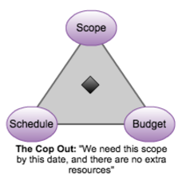
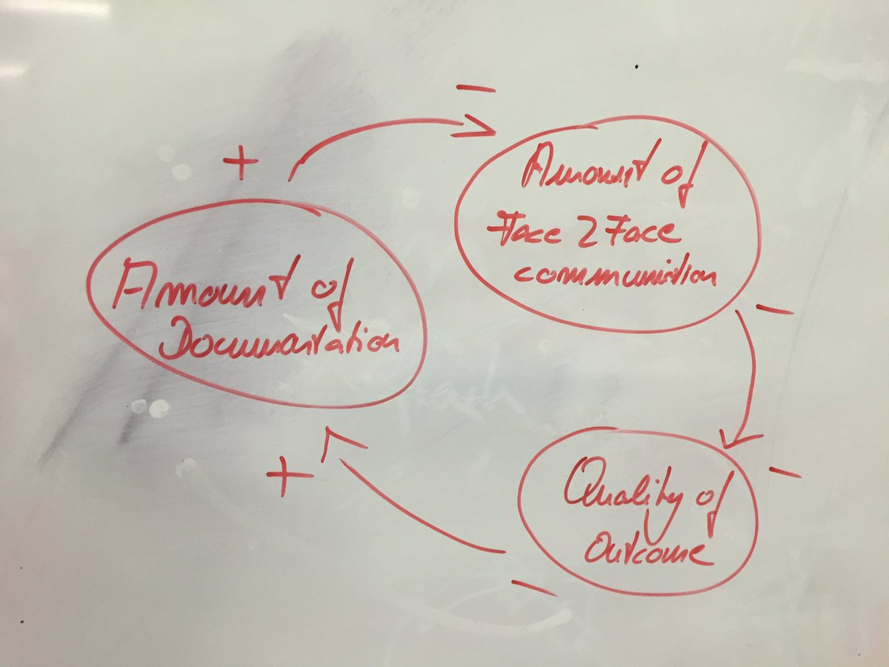

..is a battleground
PAIN
PAIN
PAIN
what can i get? how much does it cost? when can i get it?
pick two..
PAIN
iron triangle sacrifices quality:
f.ex continuous testing
why pain
Software [vs] manufacturing
Software dev't is product design
Working software is the factory
Useful information is the product
-@kb2bkb
why pain
I believe the obsession with control is a delusion and, increasingly, a fatal business error.-Ricardo Semler CEO, majority owner of Semco (industrial democracy, corporate re-engineering)
why pain
why pain
So often: 1. more specs -> less need of face2face 2. less f2f -> bad outcome 3. bad outcome -> more specs-@berndschiffer
step by step possible?
changing course possible?
value
better
Alternative to estimates: do the most important thing until either it ships or it is no longer the most important thing.
- @KentBeck
better
better
capture changing priority
if you have to:better
myth: planning is commitment. sticking to a detailed plan is not healthy - commit sparingly.
@mpoppendieck http://bit.ly/1SCVSih
better
myth: early spec reduces waste. if requirements specified long before coding, of course they change.
@mpoppendieck http://bit.ly/1WuJQfy
better
share partially complete design info. good design is discovery, in short, repeated exploratory cycles.
@mpoppendieck http://bit.ly/1N6e72A